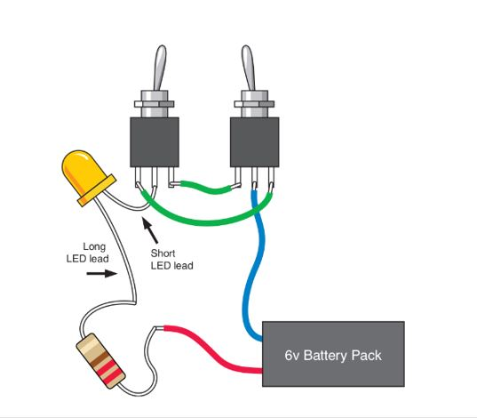

Curcuit 1

components
1- Led
2- resistor 330 ohm
3- two switches
the idea of curcuit: control the led to be on or off in different condition by using the idea of gates
Curcuit 2
components
1- Led
2- 2 Resistors 1 Kohm
3- Transistor
4- LDR
the idea of that curcuit: the led is turned off when we change the value of potentiometer or when LDR don't have light on it so the potentiometer is used as voltage regulator
Curcuit 3
components
1- 2 Leds
2- 2 Resistors 1 Kohm
3- 2 Resistors 10 Kohm
4- 2 capacitors 100 UF
5- 2 Transistors
the idea of that curcuit: the 2 leds are turned on and off automaticity and we control it through 2 capacitors we use